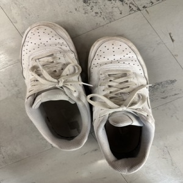

Trash of the Week Week 23: Calculator Massacre
Overview
Hello Everyone, welcome to my blog, today I am going to write about the items that I will be
trashing but before
trashing these items I want to understand how these items have helped me in my life and how I have
used them. So
I decided to track these items and understand how they have helped me get through the week. I will be doing this project based
the idea of ontograpy based on Bogost's idea.
Since my project is based on ontography, there are many parallels between my project and the concept of ontography. Ian Bogost's work on ontography involves accounting all sorts of issues and problems in the world but my website aims to map out and comprehend the entities that make up only my personal waste output.
Differences:
My website may provide insight into my individual environmental impact, but it cannot address the larger systemic issues that contribute to environmental harm. Ontography aims to account for all units and includes all factors that reveal the underlying complexity of the world. However my website focuses on my personal waste output, which may seem inadequate in the face of more significant systemic problems.
Another difference is that my website is practical and action-oriented approach to adress the systemic issues of trash and environmental footprint, but ontography is a theoretical and philosophical practice. My website aims to assist me in taking definitive steps towards reducing my environmental footprint, but ontography is much more generic and broader and instead focuses on the underlying complexity of the world.
Similarites:
Despite the differences, there are significant similarities between my website and ontography. Both ontogrophy and my website mapp out the issues. My website focuses on my personal waste output, but ontography might explores the world's issues. And at the end of the day the over achieving goal is to understand the world and the issues that are present in the world which both my website and ontogrophy
Moreover, the similarities and differences between my website and ontography prompt essential questions about the role of personal action in addressing environmental issues. While my website concentrates on individual behaviors, which may seem inadequate in the face of more significant systemic problems, ontography underscores the significance of accounting for all units, including those that may be invisible or overlooked. These different approaches encourage us to consider how personal action can be integrated into more extensive systemic changes and how we can account for the various units that contribute to environmental harm.
Conclusion
In conclusion, there are both differences similarites between the idea of ontography and my website, but the similarities show that this project is still very similar in somewhat achieving what ontography sets out to achieve. But to make my project better I would need to take a more philosophical approach and also try to sole the overlying issues rathern than just focus on the basic singular issue.
Outfits
- Old glasses: They were a great use to me but after getting checked again they are not enough I
need more
power in my classes hence I got new contact lenses as well new glasses hence I am going to
throw/recycle/donate them.
- Jacket: These are old jacket that I got them when I was in freshman year high school, they are
too small and
too tight so I also decided to donate them.
- Shoes: I got these pairs for christmas on high school in 10th grade they were a great use but
they are now
too tight and I can’t wear them so I decided to throw them as well.
Electronics
- A ti84 calculator: I got this in 8th grade for my advanced math course, however ever since its
been a great
use, but last semester in one of physics exam it suddenly stopped working. Hence I had to stop
using it and
I think its time to part ways with this calculator that has been a part of me for more than 6
years.
- An apple watch: This watch was actually sent to a different country but it fell into a road
and a car
actually stopped working after that even though it looks like there is no scratch. After taking
it to apple
store for fixing they said its more beneficial to buy a new watch rather than paying for the
repair, so its
time to dispose this watch as well.
- A scientific calculator : After the ti84 calculator stopped working I decided to resort
to my backup
calculator for the physics exam and sadly even this one stopped working hence I have to throw
this as well
now. And I had to take the exam without a calculator as well.
Travel Accessories
- An iphone Case: this was useful to me when I traveled around and it helped me protect my phone
but I changed
my phone from iphone to android so this is of no use to me right now so I thought of disposing
it.
- Traveling notebook: While traveling I also used a notebook as a logging device and I used it for many different
travel as well
as other things, such as school notes, but now that book is full and there aren’t any thing
important
written inside it so I its better off for me to throw it away.
- Hand sanitizer: The third is the sanitizer, after the pandemic especially sanitizer and while traveling this
came in very
handy because it allowed me to travel
Gallery


Back to top
Item Data
| Item |
Weight (lb) |
Location |
Cost in $ |
Owned |
Waste Facility |
| Glasses |
2 |
Face |
75 |
4 years |
Recycle/Donation |
| Jacket |
2 |
Body |
60 |
6 years |
Recycle/Donation |
| Shoes |
5 |
Feet |
60 |
3 years |
Recycle/Donation |
| TI-84 |
3 |
School bag |
120 |
6 years |
Electronic disposal |
| Watch |
2 |
Hand |
300 |
2 years |
Electronic disposal |
| Calculator |
2 |
School bag |
10 |
6 years |
Electronic disposal |
| Phone Case |
1 |
Back of phone |
15 |
1 year |
Recycle |
| Notebook |
1 |
School bag |
5 |
3 years |
Trash |
| Sanitize bottle |
1 |
Travel bag |
2 |
1 year |
Trash |
Top 3 Items
Top 3 Lightest Items
- Phone Case
- NoteBook
- Sanitizer Bottle
Coda
This was a great reflection as I learned to value all these things even more. I would try to
reduce the waste as much as possible because I can reflect that everything that you own has some sort of importance to
you so throwing them away feels a bit emotional. In addition I also learned that I can reduce my trash footprint by rather recycling and donating items rather than theowing them.
I encourage everyone to do the same and reccle as much as possible as this was a great experience for me.
I will try to test myself if I learned a good lesson by tracking my trash items again and see how much it helps and how much I have changed by doing this.
Anyways this is the end of this weeks blog see you guys next time.
Back to top
About the Author
I am a student at Rutgers and I am currently in an environmentalist path to try and reduce my
trash footprint. I am also a very creative persoon I play an instrument and currently part of a club called RUdholeffects. I liked to play and compose my own music time to time. I also play the piano quite often and I am currently learning a piece from the movie Interstellar called the cornfield chase in piano. In addition I also like to play soccer and I currently play club soccer and I also play intramurals and pickup soccer here in rutgers.
Back to top